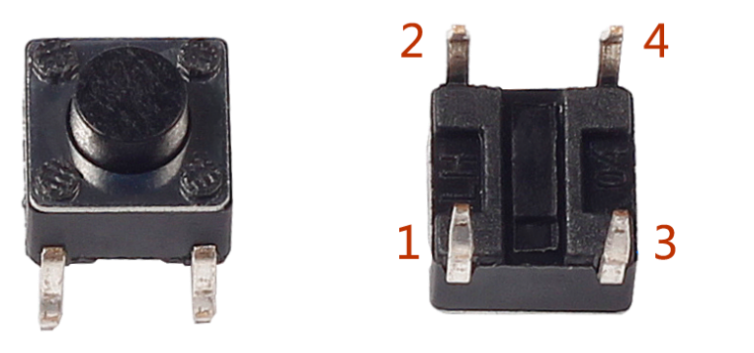
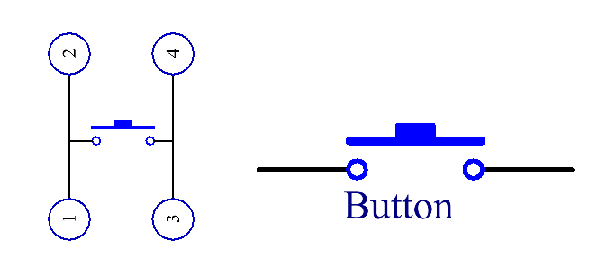

Bemerkung
Hallo und willkommen in der SunFounder Raspberry Pi & Arduino & ESP32 Enthusiasten-Gemeinschaft auf Facebook! Tauchen Sie tiefer ein in die Welt von Raspberry Pi, Arduino und ESP32 mit anderen Enthusiasten.
Warum beitreten?
Expertenunterstützung: Lösen Sie Nachverkaufsprobleme und technische Herausforderungen mit Hilfe unserer Gemeinschaft und unseres Teams.
Lernen & Teilen: Tauschen Sie Tipps und Anleitungen aus, um Ihre Fähigkeiten zu verbessern.
Exklusive Vorschauen: Erhalten Sie frühzeitigen Zugang zu neuen Produktankündigungen und exklusiven Einblicken.
Spezialrabatte: Genießen Sie exklusive Rabatte auf unsere neuesten Produkte.
Festliche Aktionen und Gewinnspiele: Nehmen Sie an Gewinnspielen und Feiertagsaktionen teil.
👉 Sind Sie bereit, mit uns zu erkunden und zu erschaffen? Klicken Sie auf [hier] und treten Sie heute bei!
2.1.1 Button
Einführung
In dieser Lektion lernen wir, wie Sie die LED mit einer Taste ein- oder ausschalten.
Komponenten

Prinzip
Taste
Die Taste ist eine übliche Komponente zur Steuerung elektronischer Geräte. Es wird normalerweise als Schalter zum Anschließen oder Unterbrechen von Stromkreisen verwendet. Obwohl die Tasten in verschiedenen Größen und Formen erhältlich sind, wird hier ein 6-mm-Miniknopf verwendet, wie in den folgenden Bildern gezeigt.
Zwei Pins auf der linken Seite sind verbunden, und der eine auf der rechten Seite ähnelt dem linken, der unten gezeigt wird:
{kind=link}
Das unten gezeigte Symbol wird normalerweise verwendet, um eine Schaltfläche in Schaltkreisen darzustellen.
{kind=link}
Wenn die Taste gedrückt wird, werden die 4 Pins verbunden, wodurch der Stromkreis geschlossen wird.
Schematische Darstellung
Verwenden Sie eine normalerweise geöffnete Taste als Eingang für Raspberry Pi. Die Verbindung ist in der folgenden schematischen Darstellung dargestellt. Wenn die Taste gedrückt wird, wird der GPIO18 auf einen niedrigen Niveau (0V) eingestellt. Wir können den Zustand des GPIO18 durch Programmierung erkennen. Das heißt, wenn der GPIO18 auf einen niedrigen Niveau wechselt, bedeutet dies, dass die Taste gedrückt wird. Sie können den entsprechenden Kode ausführen, wenn die Taste gedrückt wird, und dann leuchtet die LED auf.
Bemerkung
Der längere Pin der LED ist die Anode und der kürzere ist die Kathode.


Experimentelle Verfahren
Schritt 1: Bauen Sie die Schaltung auf.

Für Benutzer in C-Sprache
Schritt 2: Öffnen Sie die Kodedatei.
cd ~/davinci-kit-for-raspberry-pi/c/2.1.1/
Bemerkung
Wechseln Sie in diesem Experiment in den Pfad der Kode mit cd.
Schritt 3: Kompilieren Sie den Code.
gcc 2.1.1_Button.c -lwiringPi
Schritt 4: Führen Sie die ausführbare Datei aus.
sudo ./a.out
Nachdem der Code ausgeführt wurde, drücken Sie die Taste, die LED leuchtet auf; andernfalls erlischt.
Code
#include <wiringPi.h>
#include <stdio.h>
#define LedPin 0
#define ButtonPin 1
int main(void){
// When initialize wiring failed, print message to screen
if(wiringPiSetup() == -1){
printf("setup wiringPi failed !");
return 1;
}
pinMode(LedPin, OUTPUT);
pinMode(ButtonPin, INPUT);
digitalWrite(LedPin, HIGH);
while(1){
// Indicate that button has pressed down
if(digitalRead(ButtonPin) == 0){
// Led on
digitalWrite(LedPin, LOW);
// printf("...LED on\n");
}
else{
// Led off
digitalWrite(LedPin, HIGH);
// printf("LED off...\n");
}
}
return 0;
}
Code Erklärung
#define LedPin 0
Der Pin GPIO17 in der T_Extension-Karte entspricht dem GPIO0 im wiringPi.
#define ButtonPin 1
ButtonPin ist mit GPIO1 verbunden.
pinMode(LedPin, OUTPUT);
Stellen Sie LedPin als Ausgabe ein, um ihm einen Wert zuzuweisen.
pinMode(ButtonPin, INPUT);
Legen Sie ButtonPin als Eingabe fest, um den Wert von ButtonPin zu lesen.
while(1){
// Indicate that button has pressed down
if(digitalRead(ButtonPin) == 0){
// Led on
digitalWrite(LedPin, LOW);
// printf("...LED on\n");
}
else{
// Led off
digitalWrite(LedPin, HIGH);
// printf("LED off...\n");
}
}
if (digitalRead (ButtonPin)) == 0 : Überprüfen Sie, ob die Taste gedrückt wurde.
Führen Sie digitalWrite(LedPin, LOW) aus, wenn die Taste gedrückt wird, um die LED zu leuchten.
Für Python-Sprachbenutzer
Schritt 2: Öffnen Sie die Kodedatei.
cd ~/davinci-kit-for-raspberry-pi/python
Schritt 3: Führen Sie die Kode aus.
sudo python3 2.1.1_Button.py
Drücken Sie nun die Taste und die LED leuchtet auf. Drücken Sie die Taste erneut und die LED erlischt. Gleichzeitig wird der Status der LED auf dem Bildschirm gedruckt.
Code
Bemerkung
Sie können den folgenden Code Ändern/Zurücksetzen/Kopieren/Ausführen/Stoppen . Zuvor müssen Sie jedoch zu einem Quellcodepfad wie davinci-kit-for-raspberry-pi/python gehen.
import RPi.GPIO as GPIO
import time
LedPin = 17 # Set GPIO17 as LED pin
BtnPin = 18 # Set GPIO18 as button pin
Led_status = True # Set Led status to True(OFF)
# Define a setup function for some setup
def setup():
# Set the GPIO modes to BCM Numbering
GPIO.setmode(GPIO.BCM)
GPIO.setup(LedPin, GPIO.OUT, initial=GPIO.HIGH) # Set LedPin's mode to output, and initial level to high (3.3v)
GPIO.setup(BtnPin, GPIO.IN) # Set BtnPin's mode to input.
# Define a callback function for button callback
def swLed(ev=None):
global Led_status
# Switch led status(on-->off; off-->on)
Led_status = not Led_status
GPIO.output(LedPin, Led_status)
if Led_status:
print ('LED OFF...')
else:
print ('...LED ON')
# Define a main function for main process
def main():
# Set up a falling detect on BtnPin,
# and callback function to swLed
GPIO.add_event_detect(BtnPin, GPIO.FALLING, callback=swLed)
while True:
# Don't do anything.
time.sleep(1)
# Define a destroy function for clean up everything after
# the script finished
def destroy():
# Turn off LED
GPIO.output(LedPin, GPIO.HIGH)
# Release resource
GPIO.cleanup()
# If run this script directly, do:
if __name__ == '__main__':
setup()
try:
main()
# When 'Ctrl+C' is pressed, the program
# destroy() will be executed.
except KeyboardInterrupt:
destroy()
Code Erklärung
LedPin = 17
Stellen Sie GPIO17 als LED-Pin ein.
BtnPin = 18
Stellen Sie GPIO18 als Tasten Pin ein.
GPIO.add_event_detect(BtnPin, GPIO.FALLING, callback=swLed)
Richten Sie eine Fallerkennung für BtnPin ein. Wenn sich der Wert von BtnPin von einem hohen auf einen niedrigen Wert ändert, bedeutet dies, dass die Taste gedrückt wird. Der nächste Schritt ist das Aufrufen der Funktion swled .
def swLed(ev=None):
global Led_status
# Switch led status(on-->off; off-->on)
Led_status = not Led_status
GPIO.output(LedPin, Led_status)
Definieren Sie eine Rückruffunktion als Tastenrückruf.
Wenn die Taste beim ersten Mal gedrückt wird und die Bedingung, nicht Led_status,
falsch ist, wird die Funktion GPIO.output() aufgerufen, um die LED zu beleuchten.
Wenn die Taste erneut gedrückt wird, wird der Status der LED von falsch in wahr umgewandelt,
sodass die LED erlischt.